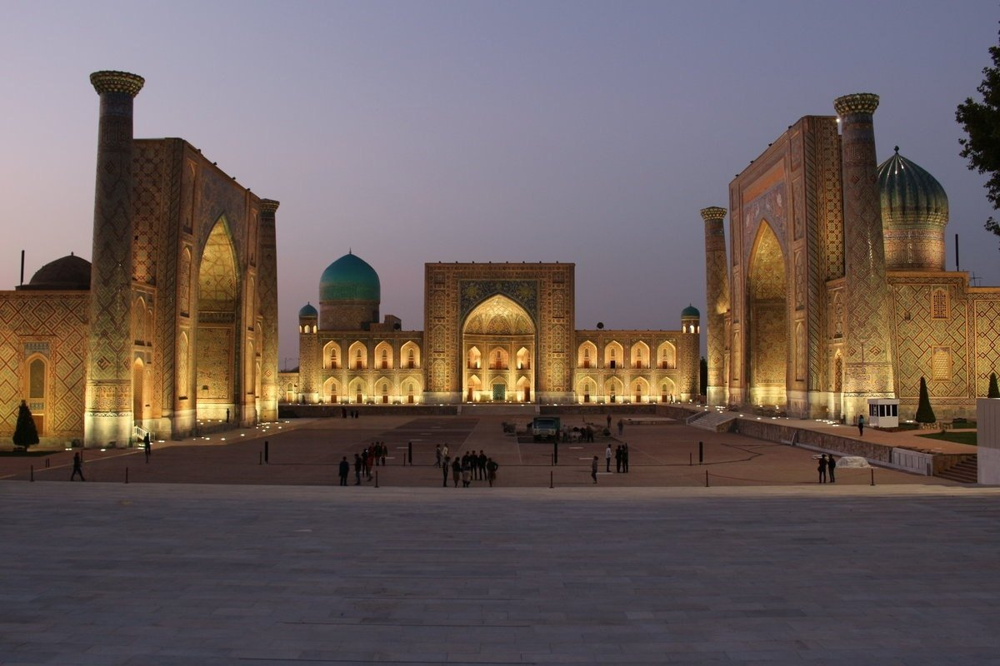

Samarqand
Samarqand — Oʻzbekiston Respublikasi Samarqand viloyatidagi qadimiy shahar. Viloyatning maʼmuriy, iqtisodiy va madaniy markazi (1938 yildan). 1925—30 yillarda Respublika poytaxti. Oʻzbekistonning janubi-gʻarbida, Zarafshon vodiysining markaziy qismida (Dargʻom va Siyob kanallari orasida) joylashgan. Oʻrtacha 695 m balandlikda. Toshkentdan 300 km. Samarqanddan Toshkent—Dushanbe, Toshkent—Turkmanboshi, Toshkent—Uchquduq—Qo'ngʻirot temir yoʻllari, Katta Oʻzbek trakti (Toshkent—Termiz yo'li) oʻtadi. Shahar aholisi va xoʻjaliklari Shovdor, Bogʻishamol ariqlaridan suv oladi. Iyulning oʻrtacha harorati 25,9°, eng baland harorat 40—42°, yanvar oʻrtacha harorati 0,2°, eng past harorat —26°. Maydoni 120 km².
